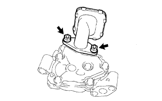
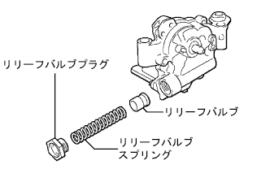

Oil Pump Assembly (2AZ-FE) Disassembly |
| 1. Remove Oil Pump Strainer Set |
 |
Remove the 2 nuts, and remove the oil pump strainer set and gasket.
| 2. Remove Oil Pump Relief Valve |
 |
Using a socket wrench (27mm), remove the oil pump relief valve plug.
Remove the oil pump relief valve spring and oil pump relief valve.